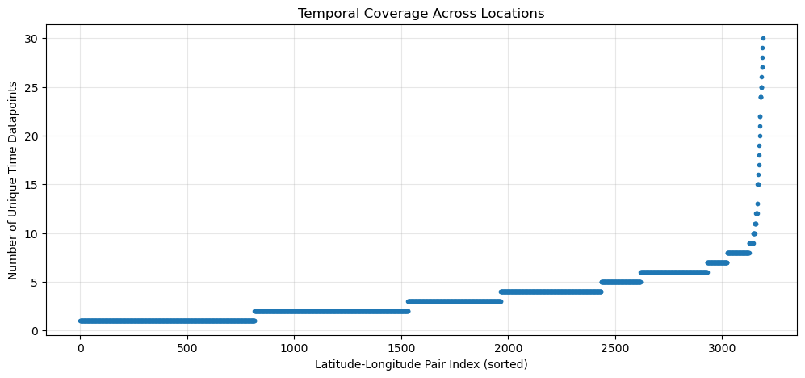
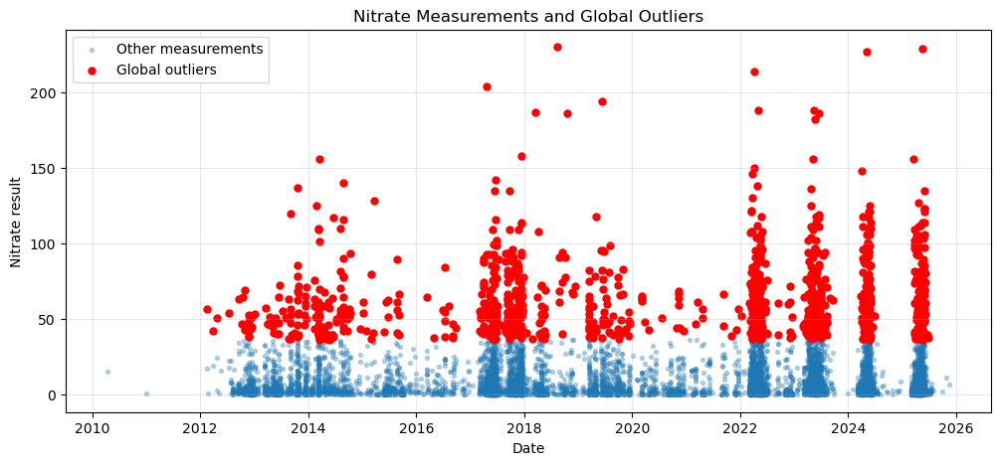
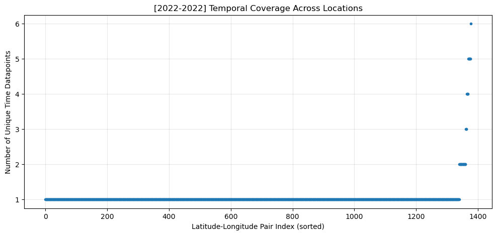
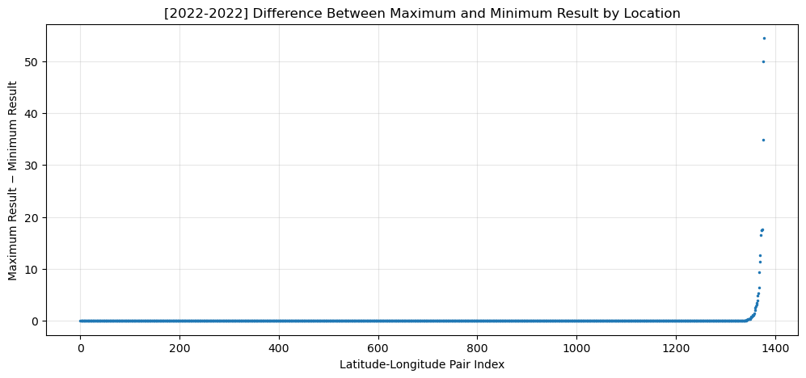
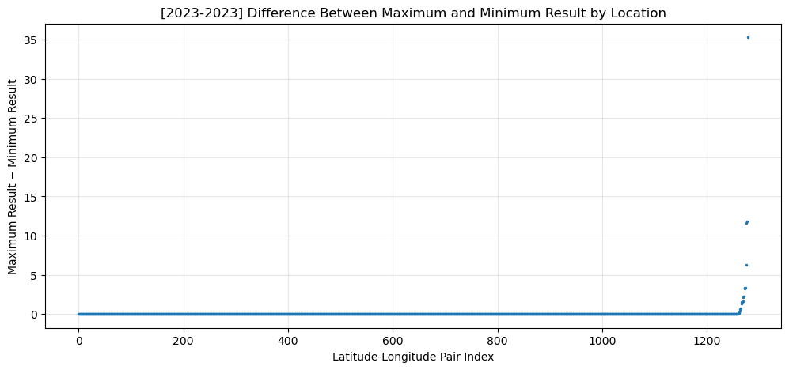
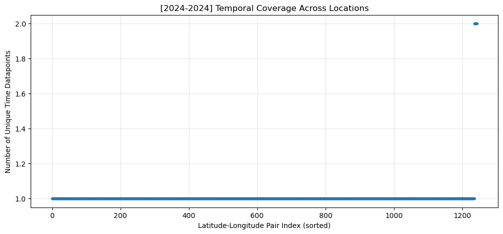
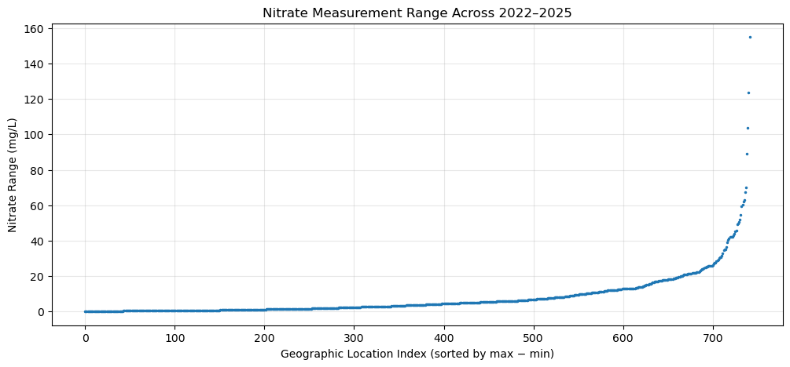

Groundwater well measurements: cleaning and analyzing the dataset
Objective: Prepare groundwater nitrate measurements for modeling within the Salinas Valley watershed. Assess the data for outliers, and see how the data is temporally distributed.
Steps: 1. Load in the raw groundwater data from data/ and clean the dataset
# Importsimport pandas as pdimport geopandas as gpdfrom pathlib import Pathimport matplotlib.pyplot as pltimport sys# Make src importable from any notebook folder (identical in every notebook)sys.path.insert(0, str(next(p for p in [Path.cwd(), *Path.cwd().parents] if (p /"src").is_dir())))from src import pathsROOT = paths.ROOTfrom src.data.groundwater import groundwater_cleaning, groundwater_outliers, temporal_analysis1, \change_over_time, temporal_analysis2
1. Load in files and clean up the dataset
Code
groundwater_final = groundwater_cleaning()
Load the groundwater data.
Load Salinas Valley/HUC8 watershed boundary.
Convert groundwater coordinates to geographic points using GeoPandas.
Here we see the first five rows of the raw groundwater data set:
_id
gm_county_name
gm_dataset_name
gm_well_category
gm_data_source
gm_well_id
gm_chemical_vvl
gm_chemical_name
gm_result_modifier
gm_result
...
src_analytical_method
src_lab_note
src_latitude
src_longitude
src_datum
src_well_depth_ft
src_top_depth_of_screen_ft
src_bottom_depth_of_screen_ft
src_well_category
geometry
0
1
SAN LUIS OBISPO
WB_ILRP
Domestic
GeoTracker
AGL020003373-ROLLING DOM 1
TDS
Total Dissolved Solids
=
350.00000
...
A2540C
NaN
35.738160
-120.633550
NAD83
NaN
NaN
NaN
Domestic/Private Drinking Water Well
POINT (-120.63355 35.73816)
1
2
SANTA CRUZ
WB_ILRP
Irrigation / Industrial
GeoTracker
AGL020002084-AG_WELL_S
B
Boron
ND
0.00053
...
E200.7
NaN
37.048478
-122.226403
NAD83
NaN
NaN
NaN
Agriculture/irrigation well
POINT (-122.2264 37.04848)
2
3
SANTA BARBARA
WB_ILRP
Irrigation / Industrial
GeoTracker
AGL020005540-PRIMARY
SC
Specific Conductivity
=
1400.00000
...
2510B
NaN
34.934444
-120.470556
NAD83
NaN
NaN
NaN
Agriculture/irrigation well
POINT (-120.47056 34.93444)
3
4
SANTA BARBARA
WB_ILRP
Irrigation / Industrial
GeoTracker
AGL020027102-RIVER RCH
NO3N
Nitrate as N
=
39.60000
...
E300.0
NaN
34.969640
-120.481420
NAD83
NaN
NaN
NaN
Agriculture/irrigation well
POINT (-120.48142 34.96964)
4
5
MONTEREY
WB_ILRP
Irrigation / Industrial
GeoTracker
AGL020001277-BASSI_AG2
CL
Chloride
=
63.89000
...
E300.0
NaN
36.525190
-121.457610
NAD83
NaN
NaN
NaN
Agriculture/irrigation well
POINT (-121.45761 36.52519)
5 rows × 40 columns
We check coordinate reference systems:
groundwater crs: EPSG:4326
huc8 crs: EPSG:4269
Reproject HUC8 to match groundwater CRS.
groundwater crs: EPSG:4326
huc8 crs: EPSG:4326
Keep only groundwater points inside the HUC8 watershed.
Dataframe shape after clipping:
(94859, 40)
Inspect counties represented inside the HUC8:
gm_county_name
MONTEREY 61058
SAN LUIS OBISPO 33769
SAN BENITO 32
Name: count, dtype: int64
Flag censored measurements.
Number of censored measurements:
Dataframe shape after removing censored measurements:
(87816, 41)
Convert sample date to datetime.
Check available chemical measurements.
gm_chemical_name
pH 11450
Specific Conductivity 11220
Total Dissolved Solids 8957
Temperature 6805
Nitrate+Nitrite 6574
Nitrate as N 5335
Sodium 4977
Magnesium 4963
Calcium 4963
Sulfate 4951
Chloride 4929
Potassium 4894
Alkalinity, total 4628
bicarbonate HCO3 749
Nitrite as N 690
Boron 525
Dissolved Oxygen (DO) 444
Iron 300
Manganese 202
1,2,3-Trichloropropane (1,2,3 TCP) 159
Hardness 63
Bicarbonate Alkalinity 33
carbonate CO3 2
Copper 1
Foaming Agents (MBAS) 1
Fluoride 1
Name: count, dtype: int64
Keep only nitrate-related measurements.
Inspect repeated nitrate measurements:
gm_well_id
gm_samp_collection_date
src_samp_collection_time
gm_chemical_name
gm_result
gm_reporting_limit
162803
AGC100000001-CCGC_0001
2013-10-24
1715
Nitrate as N
4.7
0.1
52363
AGC100000001-CCGC_0001
2013-10-24
1715
Nitrate as N
4.7
1.0
302340
AGC100000001-CCGC_0002
2013-10-24
1300
Nitrate as N
21.8
0.1
216575
AGC100000001-CCGC_0002
2013-10-24
1300
Nitrate as N
22.0
1.0
289992
AGC100000001-CCGC_0003
2013-10-24
1615
Nitrate as N
66.9
1.0
Number of duplicated measurements:
1654
Dataframe shape after removing duplicates.
(11079, 9)
Ensure that no duplicated measurements remain.
0
Create one nitrate concentration per groundwater sample.
Dataframe shape after aggregating measurements:
(10665, 7)
Perform final check of the target variable:
count 10665.000000
mean 13.123557
std 21.049301
min 0.000000
25% 1.500000
50% 4.200000
75% 15.500000
max 230.000000
Name: nitrate_mg_L, dtype: float64
We can assess the number of datapoints above the 75% percentile.
Number of outliers: 1148 out of 10665.
We can assess how an outlier affects the measurement at a single location.
We could filter out all the points where the mean_including_outlier
and the mean_excluding_outlier signficantly diverge given that num_measurements > 2
and num_non_outliers > 2.
gm_latitude
gm_longitude
outlier
mean_including_outlier
mean_excluding_outlier
num_measurements
num_non_outliers
7
36.00808
-120.885800
36.70000
23.900000
19.633333
4.0
3.0
14
36.01555
-120.888400
71.90000
40.683333
30.166667
6.0
3.0
34
36.08941
-120.966220
69.60000
28.361379
16.460000
7.0
5.0
35
36.09003
-120.971380
45.90059
18.316765
12.800000
6.0
5.0
37
36.10710
-121.010127
41.80000
29.806667
27.408000
6.0
5.0
This figure visually represents all the measurements above the 75th percentile as a function of time.
We decide to leave the groundwater data as is, no outliers removed based on this set of analysis.
3. Temporal variance of data
3.1 Overall number of unique timepoints in the whole dataset
We have 3191 number of unique geographical points out of 10665
Now we want to count unique time datapoints for each coordinate pair.
Mean number of unique timepoints: 3.34
Median number of unique timepoints: 3.00
Max number of unique timepoints: 30.00
Min number of unique timepoints: 1.00
Here we plot the number of unique timepoints as a function of a geographic index.

Here we plot the difference between the maximum and minimum results as a function of a geographic index.

There is a large variance between minimum and maximum measurements (~160 mg/L).
Show percentage of points falling within each year of the dataset:
year
unique_geographical_points
percentage_of_total
0
2010.0
1
0.031338
1
2011.0
1
0.031338
2
2012.0
352
11.031025
3
2013.0
649
20.338452
4
2014.0
391
12.253212
5
2015.0
209
6.549671
6
2016.0
110
3.447195
7
2017.0
1439
45.095581
8
2018.0
308
9.652147
9
2019.0
501
15.700407
10
2020.0
138
4.324663
11
2021.0
68
2.130993
12
2022.0
1378
43.183955
13
2023.0
1279
40.081479
14
2024.0
1244
38.984644
15
2025.0
1274
39.924788
Measurements within 2022-2025 have more consistently been performed.
3.2 Number of measurements per unique geographic point for individual years
Year = 2022
Mean number of unique timepoints: 1.06
Median number of unique timepoints: 1.00
Max number of unique timepoints: 6.00
Min number of unique timepoints: 1.00
All locations with overall nitrate concentration ranges (max-min) exceeding 10 mg/L:
34
Location-years excluded: 3
Remaining measurements: 5280


Year = 2023
Mean number of unique timepoints: 1.01
Median number of unique timepoints: 1.00
Max number of unique timepoints: 2.00
Min number of unique timepoints: 1.00
All locations with overall nitrate concentration ranges (max-min) exceeding 10 mg/L:
6
Location-years excluded: 0
Remaining measurements: 5280

Year = 2024
Mean number of unique timepoints: 1.01
Median number of unique timepoints: 1.00
Max number of unique timepoints: 2.00
Min number of unique timepoints: 1.00
All locations with overall nitrate concentration ranges (max-min) exceeding 10 mg/L:
4
Location-years excluded: 0
Remaining measurements: 5280

Year = 2025
Mean number of unique timepoints: 1.00
Median number of unique timepoints: 1.00
Max number of unique timepoints: 2.00
Min number of unique timepoints: 1.00
All locations with overall nitrate concentration ranges (max-min) exceeding 10 mg/L:
2
Location-years excluded: 0
Remaining measurements: 5280
Display the excluded outlier datapoints:
gm_well_id
gm_well_category
gm_samp_collection_date
gm_latitude
gm_longitude
nitrate_mg_L
year
1139
AGL020002892-MART_D_Y
Domestic
2022-05-25 15:45:00
36.57302
-121.575265
20.2
2022.0
1457
AGL020003637-AGSO_WELL1
Irrigation / Industrial
2022-05-25 16:20:00
36.57302
-121.575265
2.8
2022.0
4583
AGL020038542-SILA WELL1
Irrigation / Industrial
2022-05-05 14:02:00
36.65139
-121.554250
56.9
2022.0
4587
AGL020038549-LAUR WELL1
Irrigation / Industrial
2022-05-05 14:30:00
36.65139
-121.554250
2.5
2022.0
4585
AGL020038542-SILA WELL1
Irrigation / Industrial
2025-04-10 12:25:00
36.65139
-121.554250
55.2
2025.0
4589
AGL020038549-LAUR WELL1
Irrigation / Industrial
2025-04-10 12:05:00
36.65139
-121.554250
2.8
2025.0
The 2022-2025 data has a similar amount of unique geographical points: 1200-1400. During those years, most geographical locations have 1 measurement during a singular year.
There some outliers printed, where multiple measurements have been conducted and the nitrate concentration measurement in the same year at the same location (but different wells) significantly disagrees. We have excluded any of these particular cases, although there were only a few (3).
3.3. How do measurements change over time?
Code
change_over_time(groundwater_period)
We want to see how the nitrate concentration changes over time.
Number of wells present in all years 2022–2025: 742
In the following analysis, keep only those wells.
See how the mean nitrate concentration changes year by year:
year
2022
2023
2024
2025
gm_latitude
gm_longitude
35.491180
-120.435050
0.106
1.310
0.977
1.810
35.597690
-120.564500
0.129
0.279
0.191
0.311
35.491948
-120.696402
0.213
1.430
0.326
0.426
35.715300
-120.703510
0.213
1.600
0.400
0.600
35.711860
-120.704440
0.272
2.300
2.700
0.500
...
...
...
...
...
...
36.013750
-120.892000
121.000
119.000
125.000
127.000
36.052080
-120.920640
130.000
125.000
107.000
123.000
36.342850
-121.236820
138.000
118.000
96.000
106.000
36.052150
-120.920490
146.000
136.000
121.000
135.000
36.638430
-121.563200
214.000
186.000
227.000
229.000
742 rows × 4 columns
We plot the range of nitrate concentrate over the time span per location.

Again, some locations have a wide variation in measurement.
4. Saving Files
Code
print("Save cleaned groundwater target dataset:", paths.NITRATE_CLEAN)groundwater_period.to_csv( paths.NITRATE_CLEAN, index=False)print("")print("Convert final groundwater table back to a GeoDataFrame:", paths.NITRATE_CLEAN_GPKG)groundwater_final_gdf = gpd.GeoDataFrame( groundwater_period, geometry=gpd.points_from_xy( groundwater_period["gm_longitude"], groundwater_period["gm_latitude"] ), crs="EPSG:4326")print("")groundwater_final_gdf.to_file( paths.NITRATE_CLEAN_GPKG, layer="groundwater_nitrate", driver="GPKG")print("Create 500 m buffers around each well, used for the area-weighted soil features in data_merge/all_merge_final.ipynb.")BUFFER_M =500EQUAL_AREA_CRS ="EPSG:3310"wells = groundwater_period.drop_duplicates("gm_well_id")[["gm_well_id", "gm_latitude", "gm_longitude"]]well_buffers = gpd.GeoDataFrame( wells.assign(buffer_m=BUFFER_M), geometry=gpd.points_from_xy(wells["gm_longitude"], wells["gm_latitude"]), crs="EPSG:4326",).to_crs(EQUAL_AREA_CRS)well_buffers["geometry"] = well_buffers.buffer(BUFFER_M, quad_segs=16)paths.WELL_BUFFERS.unlink(missing_ok=True) # GPKG appends new layers; start from a clean filewell_buffers.to_file(paths.WELL_BUFFERS, driver="GPKG")print(f"{len(well_buffers)} well buffers of {BUFFER_M} m saved:", paths.WELL_BUFFERS)
Save cleaned groundwater target dataset.
Convert final groundwater table back to a GeoDataFrame.
Save spatial version.
Create 500 m buffers around each well, used for the area-weighted soil features in data_merge/all_merge_final.ipynb.
1993 well buffers of 500 m saved